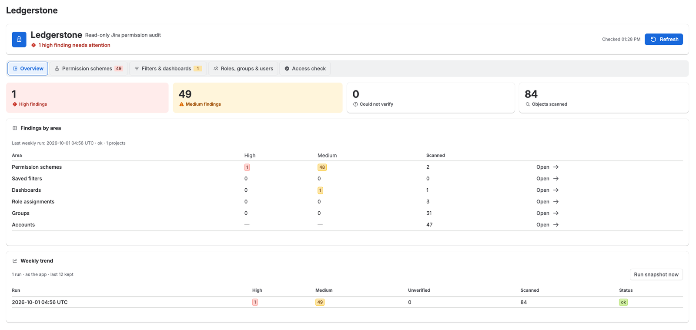
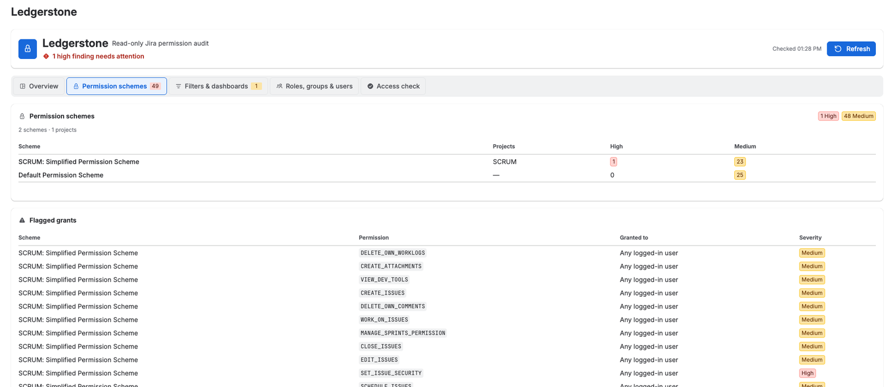
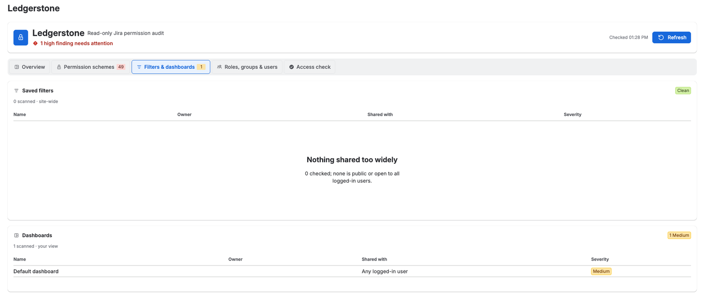
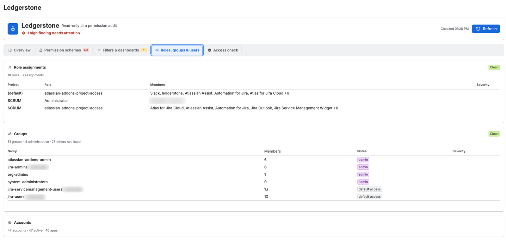
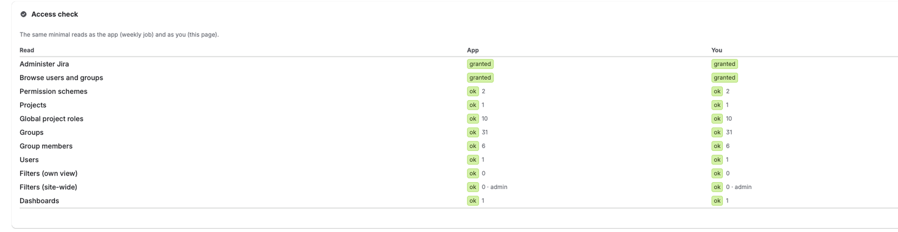

1. What Ledgerstone does
Ledgerstone is a read-only audit app for Jira Cloud administrators. It answers one question: is our Jira more open than we think? It reads the site's configuration and lists the places where access is wider than intended:
- permission scheme grants open to the public or to every logged-in user;
- saved filters and dashboards shared publicly or with every logged-in user;
- project roles held by everyone with product access;
- inactive accounts still in administrative groups.
It also counts the site's accounts by type, keeps a weekly snapshot with a 12-run trend, and shows what it can read (the Access check). Each finding is rated High or Medium by fixed rules (section 10).
Ledgerstone never changes anything in Jira: its only Jira scopes are read scopes (section 14). It runs entirely on Atlassian's Forge platform and makes no calls to servers outside Atlassian.
2. Requirements
- A Jira Cloud site.
- A Jira administrator to install and use it. Ledgerstone is a Jira administration page, so only Jira administrators see it.
- For complete results the viewer needs Administer Jira and Browse users and groups, which Jira administrators normally have. The Access check tab shows what each identity can read.
- A licence: free for sites with up to 10 users; larger sites start with a 30-day free trial (section 15).
3. Install and open
- InstallInstall Ledgerstone on your Jira Cloud site from its Atlassian Marketplace listing and approve the read-only permissions it asks for.
- OpenIn Jira, select Settings (the gear icon) → Apps, then choose Ledgerstone in the sidebar.
- Allow accessThe first time, Jira asks you to let Ledgerstone read Jira as you. Accept to continue. The page's live reads use your Jira permissions.
- First auditIf no successful audit is on record for the site, Ledgerstone takes the first snapshot as soon as the page opens. A banner says Running your first audit; it takes a few seconds. After that the audit runs on its own once a week.
4. The page at a glance
The top card shows the name, the tagline "Read-only Jira permission audit" and a one-line verdict. On the right are the time of the last check ("Checked 14:05") and Refresh; during a trial, "Trial ends <date>" appears there too. The verdict follows this order:
| Verdict | Meaning |
|---|---|
| Checking the site… | Sections are still loading. |
| N sections could not be read | At least one section returned an error. Its tab shows why (section 17). |
| N high findings need attention | At least one High finding. |
| N medium findings to review | No High finding, at least one Medium. |
| N items could not be verified | Nothing flagged, but an administrative group could not be fully read. |
| All clear | No section failed and nothing that was read is flagged. A tab can still carry an Incomplete marker (section 12). |
Five tabs follow: Overview, Permission schemes, Filters & dashboards, Roles, groups & users and Access check. A tab's badge shows its number of findings (High, Medium and could-not-verify), coloured by the most serious; ! means one of its sections could not be read.
5. Overview

- Four totals: High findings, Medium findings, Could not verify, and Objects scanned (permission schemes, saved filters, dashboards, role assignments, groups and accounts read). Findings are counted per grant for schemes, per filter or dashboard, per role assignment row and per group: two inactive members of one administrative group count as one finding.
- Findings by area: one row each for Permission schemes, Saved filters, Dashboards, Role assignments, Groups and Accounts, with High, Medium and Scanned counts and an Open link to the tab. The card's header line shows the last weekly run (time and status) and the site's number of projects.
- Weekly trend: the stored weekly runs, newest first, up to 12. Each shows High, Medium, Unverified and Scanned with the change since the previous run (red or amber for more findings, green for fewer). Status is ok, failed, or N unread when some areas could not be read; the change is then compared only on the areas read in both runs. Run snapshot now sits on this card.
6. Permission schemes

Ledgerstone reads every permission scheme with all of its grants, and which projects use each scheme. Schemes that no project uses are checked too.
- Permission schemes table: each scheme, the projects that use it (more than three are shown as "N projects"; hover to see them), and its High and Medium counts.
- Flagged grants table: one row per risky grant with the scheme, the permission key (for example
BROWSE_PROJECTS), who it is granted to, and the rating. Hover the rating for the reason. It shows 20 rows per page, grouped by scheme; sort by Permission to find a grant. With nothing flagged the tab says "No risky grants".
| Granted to | Rating |
|---|---|
| Public: "Anyone (public, no login)" | High |
Any logged-in user; any user with a product's access (for example "Any user with Jira Software access"); or a default product-access group such as jira-users-<site> | High for the eight administrative or destructive permissions below; Medium for every other permission |
| A named group, a single user, a project role, a user or group custom field, the reporter, the current assignee, the project lead, or Service Desk portal customers | Not flagged (a specific, deliberate grant) |
Administrative or destructive permissions: ADMINISTER_PROJECTS, EDIT_WORKFLOW, EDIT_ISSUE_LAYOUT, DELETE_ISSUES, DELETE_ALL_COMMENTS, DELETE_ALL_ATTACHMENTS, DELETE_ALL_WORKLOGS, SET_ISSUE_SECURITY.
Default product-access groups are recognised by name: jira-users, jira-software-users, jira-servicemanagement-users, jira-servicedesk-users, jira-core-users, jira-work-management-users and jira-product-discovery-users, each with or without the site's suffix (for example jira-users-acme). Every licensed user is a member, so a grant to one of them reaches everyone.
To map projects to schemes, Ledgerstone asks Jira once per project. On very large sites, projects it could not map in time are listed as "Not mapped" with an Incomplete marker; every scheme's grants are still checked.
7. Filters & dashboards

Two cards, Saved filters and Dashboards, list only the items shared too widely: name, owner (marked "inactive" if the owner's account is deactivated), who it is shared with, and the rating. An item takes the rating of its most open share. With nothing flagged a card says "Nothing shared too widely".
| Shared with | Rating |
|---|---|
| Anyone on the web (public) | High |
| Any logged-in user | Medium |
| A group, a project, a project role or a single user | Not flagged |
- Saved filters: site-wide. As a Jira administrator, the page asks Jira for every filter on the site, not only those shared with you.
- Dashboards: your view. Jira's dashboard search has no administrator option, so this list holds the dashboards you can see.
- The weekly audit reads as the app (section 11): its filter list is site-wide only when the app's identity holds Administer Jira (see the Access check); otherwise it is the app's own view.
8. Roles, groups & users

Role assignments
For every project role, Ledgerstone reads its default members (shown with the project "(default)") and its members in each project, and lists every role that has members: project, role, members and rating. The group Jira uses for apps is shown as "Apps (atlassian-addons-project-access)".
| Member | Rating |
|---|---|
| A default product-access group (every licensed user) in an administrative role: Jira's built-in administrator role, or a role named Administrator or Administrators | High |
| A default product-access group in any other role | Medium |
| Named users and other groups | Not flagged |
A project whose roles could not all be read in time is listed under "Not read" instead of being shown partly. The table shows up to 500 rows.
Groups
Ledgerstone reads every group's size, and the full membership of administrative groups so that inactive administrators can be spotted. The table shows administrative groups (marked admin), default-access groups (default access) and any flagged group; the header counts the others. Member counts include inactive accounts.
A group is administrative when Jira reports it as granting site-admin or admin access, or when it is named site-admins, org-admins, administrators, system-administrators, jira-administrators, jira-admins (with or without a suffix) or atlassian-addons-admin.
| Finding | Rating |
|---|---|
| An inactive account (a person's or an app's) that is still a member of an administrative group. Deactivated accounts are often reactivated later without anyone re-checking what they belonged to. | High |
| An administrative group whose members could not be read completely: more than 500 members, or the time limit was reached | Could not verify |
Inactive members' names are shown on the page, read live from Jira. They are not stored.
Accounts
Counts of the site's accounts: total, active, inactive or deleted, apps, customer accounts and guests. Accounts are counted, not rated, and no per-person data is kept. Ledgerstone reads up to 8,000 accounts; beyond that, or if Jira is slow, it says "stopped early; counts are a lower bound".
9. Access check

Scopes decide which Jira APIs an app may call, but Jira also checks product permissions such as Administer Jira and Browse users and groups. The Access check makes the same small set of reads twice, as the app (the identity of the weekly audit) and as you (the identity of the page), and shows the results side by side, so a gap in coverage is never silent. Most reads ask for a single item, and the page receives only each read's result, a count and a short note.
- Administer Jira and Browse users and groups: granted or not granted.
- Permission schemes, Projects, Global project roles, Groups, Group members, Users, Filters (own view), Filters (site-wide), Dashboards: ok with a count, empty, or failed with the HTTP status and the reason (scope error, not permitted, not found, rate limited).
- Filters (site-wide) adds a note: "admin", "site-wide view confirmed", or "override ignored" when Jira returned only that identity's own filters.
- Counts come from a one-item read, so they show what Jira reported for that single request: the Users count, for example, is 0 or 1, not the number of accounts. The tab's badge counts reads that failed or were not granted as High and empty reads as Medium, so that a gap stands out.
10. How findings are rated
| Rating | Means | Examples |
|---|---|---|
| High | Open to the public, administrative or destructive power for every user, or an inactive account in an administrative group | Browse projects granted to Public; Delete issues granted to any logged-in user; a dashboard shared with anyone on the web |
| Medium | Open to every logged-in or licensed user | A filter shared with any logged-in user; jira-users-<site> in a project's Member role |
| Could not verify | Not fully read, so not known to be fine | An administrative group with more than 500 members |
| Not flagged | A specific, deliberate grant or share | A permission granted to a named group or project role |
A section that fails is never counted as clean. A list cut short carries a marker (Incomplete, Not mapped, Not read or Could not verify), and its counts cover only what was read. A section that fails shows "Could not read" with one of these reasons: The licence is inactive, Missing app scope, Not permitted for this identity, Rate limited; retry shortly, Jira gave up after 10 seconds or Unexpected error.
11. Weekly audit, trend and Run snapshot now
- Schedule. Atlassian's Forge platform runs Ledgerstone's scheduled job every hour. The job runs the full audit when the last successful audit is more than 6 days and 20 hours old, when the last run failed, or when no audit is on record; otherwise it only records that the schedule is alive. The result is one audit a week. If the job itself fails, the next hourly run tries again; an area that fails inside a run is shown as unread until the next audit.
- Identity. The job has no user, so it reads Jira as the app. Its results depend on the app's Jira permissions, which the Access check shows.
- Time. The job has up to 270 seconds; each of the six areas gets up to 40 seconds of it. An area that fails is recorded as unread. An area that runs out of time keeps what it read, and its numbers are then a lower bound.
- What it keeps. The latest snapshot (counts plus the flagged items, without personal data; section 13) and a history of up to 12 runs, one per UTC day: a second run on the same day replaces that day's entry.
- Run snapshot now (Overview → Weekly trend) runs the same job immediately, as the app. It must finish within Jira's 25-second limit for page actions, so each area gets about 3 seconds, and on large sites some areas may stop early. A successful manual run also restarts the weekly clock: the next scheduled audit comes 6 days and 20 hours later. Only Jira administrators can run it.
- First open. On a site with no successful audit on record, the page starts this snapshot by itself, once, when it opens.
- Refresh or Run snapshot now? Refresh re-reads the tabs live as you and does not change the trend. Run snapshot now updates the stored snapshot and the trend.
12. Large sites and time limits
Each part of the page is read with its own 15-second budget, inside Jira's 25-second limit, so one slow area cannot block the others. Lists are read page by page, up to:
| List | Read up to |
|---|---|
| Projects | 2,000 |
| Saved filters | 4,000 |
| Dashboards | 4,000 |
| Groups | 2,000 |
| Members of each administrative group | 500 |
| Accounts | 8,000 |
| Role assignment rows shown | 500 |
When a limit or the time budget is reached, the area says so with Incomplete, Not mapped, Not read or Could not verify, and its counts cover only what was read. Jira rate limits and temporary gateway errors are retried with backoff, honouring Jira's Retry-After header within the time budget.
13. What Ledgerstone stores
Ledgerstone keeps a small amount of data in its own Forge storage, inside Atlassian's cloud and under your site's data residency.
| Stored | Contents |
|---|---|
| Latest weekly snapshot | Counts per area and, for flagged items, non-personal labels: scheme, filter, dashboard, group and role names, permission keys, project keys and share types. People appear only as "A named user" or "A named app"; shares with individual users are only counted; owners' and inactive administrators' names are not stored. Every administrative group is kept with its size and its number of inactive members. |
| Run history (up to 12) | Counts per area and in total, and each run's status and time. |
| Heartbeat | The time of the last hourly check. |
- Not stored: people's names, account IDs, email addresses or issue content. People's names appear only on the page, read live from Jira for the viewing administrator.
- Logs: timings, counts, HTTP status codes, the site's cloud ID and the app's own messages; a failed read can also log a project key or a group or role name. Logs contain no people's names, email addresses, account IDs or Jira response bodies, and are visible only to the app's developer through Atlassian's Forge tooling.
- No egress: Ledgerstone makes no network calls outside Atlassian and uses no third-party services.
Full details: Privacy policy.
14. Permissions it asks for
Ledgerstone declares 19 scopes: its own storage and 18 Jira read scopes. It has no write, delete or manage scope, so it cannot change anything in Jira. It uses Atlassian's fine-grained ("granular") read scopes rather than the broad classic ones, because the classic scopes would also allow reading issues, comments, attachments and email addresses, which an audit does not need. Some scopes are needed only because Jira embeds those objects in the responses Ledgerstone reads (project objects include their versions and components, for example), and Jira rejects a call unless every scope that endpoint lists is granted.
| Scope | Why |
|---|---|
storage:app | Ledgerstone's own private storage (section 13). No Jira access. |
read:permission-scheme:jira | Permission schemes, and the scheme each project uses |
read:permission:jira | The permission catalogue and the grants inside each scheme |
read:project-role:jira | Project roles and who holds them |
read:group:jira | Groups, their members, and group-based grants |
read:user:jira | Users, user-based grants and role members |
read:project:jira | Projects, and projects referenced in shares and roles |
read:filter:jira | Saved filters and their share settings |
read:dashboard:jira | Dashboards and their share settings |
read:jql:jira | Each filter's query, which is part of Jira's filter response |
read:field:jira | Grants that point to a user or group field |
read:application-role:jira | Product access embedded in user objects |
read:avatar:jira | Avatars embedded in user, project and group objects |
read:project-category:jira | Categories embedded in project objects |
read:project.property:jira | Project properties that project search can include |
read:project-version:jira | Versions embedded in project objects |
read:project.component:jira | Components embedded in project objects |
read:issue-type:jira | Issue types embedded in project objects |
read:issue-type-hierarchy:jira | The issue type hierarchy embedded in project objects |
Identities. The page reads Jira as you, and Jira applies your permissions. The weekly job and Run snapshot now read as the app. Before showing anything gathered as the app (the stored snapshot, the trend and the Access check), the page confirms that the viewer holds Administer Jira.
15. Licensing
- Sites with up to 10 users: free.
- Larger sites: a 30-day free trial, then a paid subscription billed through the Atlassian Marketplace (see Pricing). During a trial the header shows "Trial ends <date>".
- Without an active licence or trial, the page shows "Ledgerstone is not licensed on this site" with an Open Manage apps button, and the page makes no reads from Jira.
16. Try it on a test site
For Atlassian reviewers and anyone evaluating Ledgerstone. These steps change a test site's configuration to produce findings; undo them afterwards. Jira's menu names vary a little between sites: newer sites say "work items" for issues and "spaces" for projects.
- BaselineOpen Ledgerstone (Settings → Apps → Ledgerstone). On a new site the first audit runs at once. Most sites already show Medium findings, because Jira's default permission schemes grant many permissions to any logged-in user.
- A High grant in a permission schemeIn Jira, open Settings → Work items → Permission schemes and pick any scheme (Ledgerstone checks every scheme, used or not). Find Delete issues (possibly "Delete work items"), select Update, choose Any logged in user and save. In Ledgerstone click Refresh: Permission schemes lists
DELETE_ISSUES· Any logged-in user · High (sort the Flagged grants table by Permission to find it), and the verdict counts it. - A public grant (optional)If your site allows public access, grant any permission to Public. Ledgerstone shows it as "Anyone (public, no login)", High.
- A filter shared too widelySave any filter, then in Filters open its ⋯ menu → Edit and, under Viewers, share it with all logged-in users of the site (Jira may call this "My organization"); save. This needs Jira's Share dashboards and filters permission. Refresh: Filters & dashboards lists it as Medium, "Any logged-in user".
- A role held by everyoneIn a company-managed project's settings, open People and add the default access group (for example
jira-users-<your site>) to a role. Refresh: Roles, groups & users lists it as Medium; in the Administrator role it is High. - The trendReload the page, then on the Overview click Run snapshot now. The Weekly trend replaces today's row (one row per UTC day) with the new totals, read as the app. A change appears only against a run from an earlier day.
- What the app can readOpen Access check to compare what the weekly job (as the app) and the page (as you) can read. Then undo the test changes and click Refresh.
17. Troubleshooting
| You see | What to do |
|---|---|
| Jira asks you to allow access | Accept. The page reads Jira with your permissions and cannot load without your consent. |
| "N sections could not be read" | Open the tab marked !; its card says why. If no tab is marked, the failing part is the Overview's weekly trend. For "Rate limited" or "Jira gave up after 10 seconds", click Refresh after a minute. For "Missing app scope" or "Not permitted for this identity", check the Access check tab and write to support. |
| "Could not verify" on Groups | An administrative group has more than 500 members or was not fully read in time. Click Refresh, or review its members in Atlassian Administration. |
| Incomplete, Not mapped or Not read | A large site reached a page or time limit (section 12). The counts shown are a lower bound. |
| The Weekly trend is empty | The first audit runs when the page first opens; click Run snapshot now. After that, one run a week. |
| Dashboards say "your view" | Expected: Jira lists only the dashboards you can see. |
| The Access check shows "not granted" for the app | The weekly audit sees less than the page, for example filters only in the app's own view. The live tabs are not affected. |
| "Ledgerstone is not licensed on this site" | Start a trial or subscribe from Manage apps. |
18. Uninstall
In Jira, select Settings → Apps → Manage apps, find Ledgerstone and choose Uninstall. This stops the weekly job. Atlassian then deletes the data Ledgerstone stored under its Forge hosted-storage data lifecycle: the data is soft-deleted, then permanently removed after Atlassian's retention period. Within 21 days of uninstalling, Atlassian can relink a reinstall to it on request.
19. Support
Write to support@monaidea.com with your Jira site address; a screenshot helps. We reply within two business days (Monday to Friday, 9:00–17:00 US Central). Never send passwords, API tokens or exports of your user list: we will never ask for them.